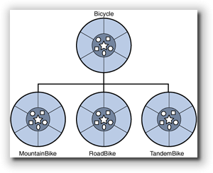

Class Relationships
Value-Oriented or Object-Based programming involves creating new, user-defined types. There are four strategies for building a new type:
- Build it completely from scratch, using only built-in components.
- Build it from scratch, but make use of the classes that others have written to do some of the work.
- Combine simpler types to create complex types. This is composition.
- Extend a general class, adding new features. This is called inheritance.
Programming with inheritance is called Object Oriented Programming.
These strategies express three kinds of "class relationships":
- The uses-a relationship, (or association), occurs when your class uses the services of other classes. For instance, if your class uses cout in one of your member functions, your class is dependent on the ostream class.
- The has-a relationship, says one class is a combination of other objects. In the has-a relationship one type is composed of different parts. A Bicycle class thus may contain two instances of the Wheel class.
-
The is-a relationship, when one class is an extension
or "kind of" another class. The is-a relationship
occurs when members of one class are a subset of
another class. The is-a relationship is implemented using
public inheritance. In the relationship shown
here, we'd say that a MountainBike
is-a Bicycle.

 This course content is offered under a
CC
Attribution Non-Commercial license. Content in this course
can be considered under this license unless otherwise noted.
This course content is offered under a
CC
Attribution Non-Commercial license. Content in this course
can be considered under this license unless otherwise noted.